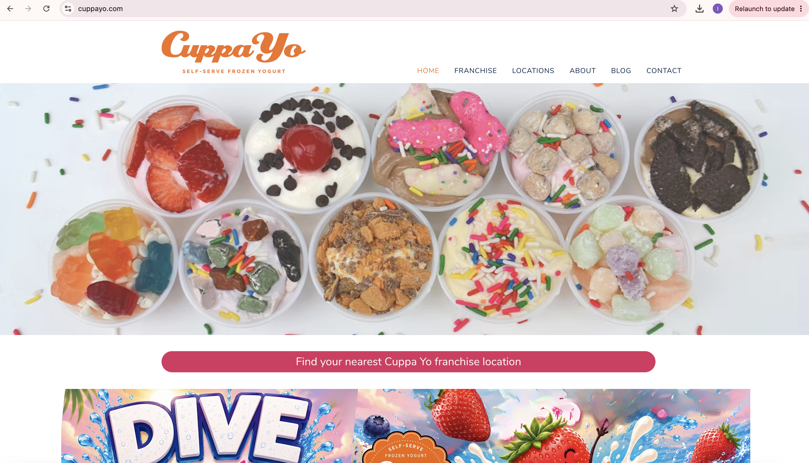
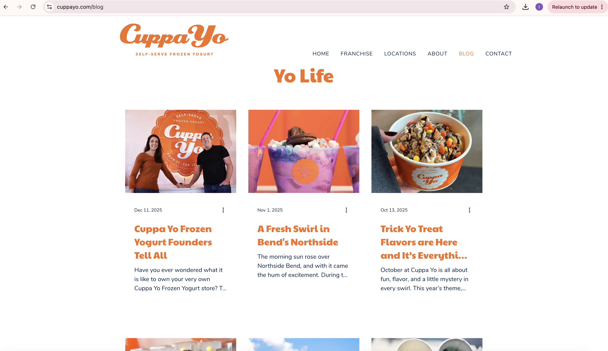
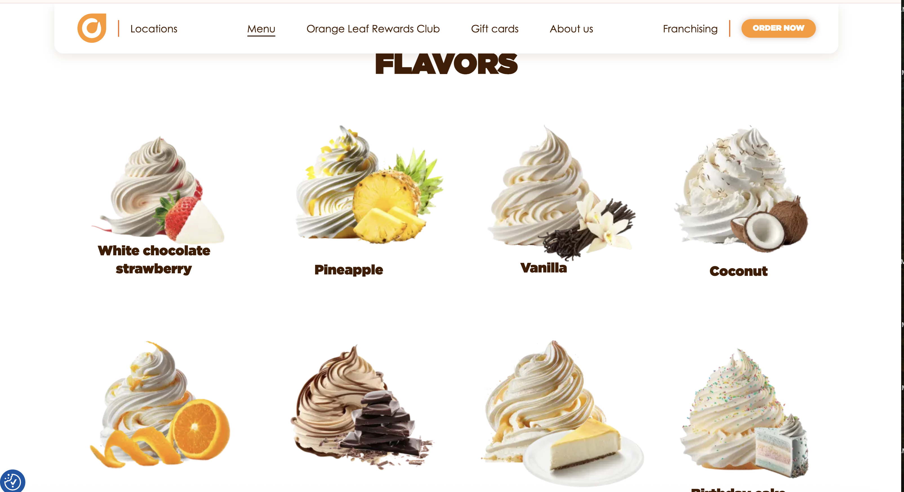
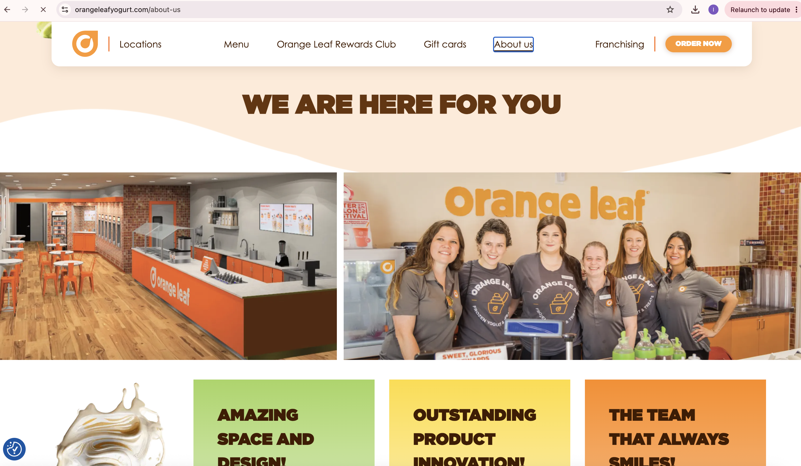
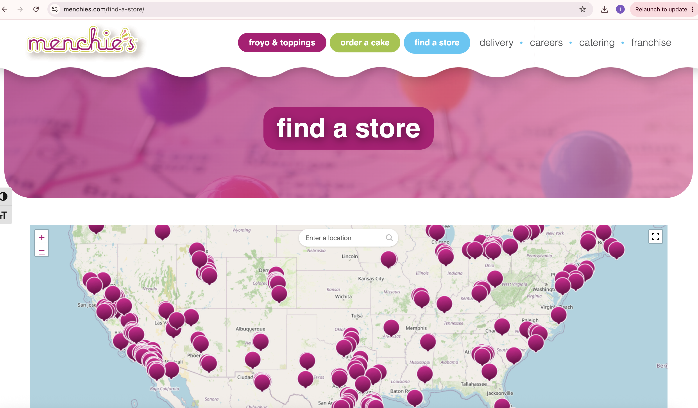
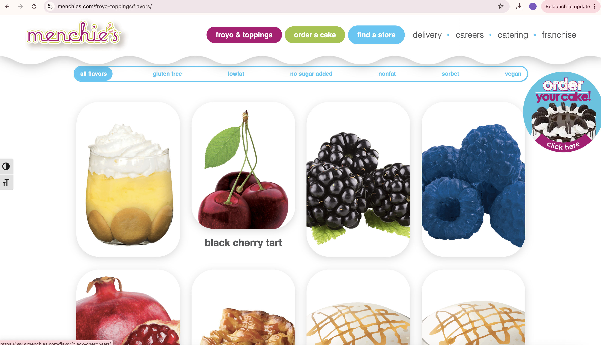

Froyo Hut
Froyo Hut is a small, local frozen yogurt shop situated in Northeast Seattle. Surrounded by many other restaurants and dessert parlors in the area, Froyo Hut stands out with its “tiki-bar” aesthetic, using wooden stools and authentic bamboo to create a fresh, tropical feel. Froyo Hut attracts customers late into the night, as the shop stays open until 1:00 am - the perfect place for a light night indulgence. They offer a wide variety of flavors, including seasonal tastes that rotate every couple of months. When you walk into the Hut, don’t be surprised if you are greeted with a warm welcome and a smile. Our staff put an emphasis on creating a welcoming and relaxed environment for our customers, something that sets us apart from other self-serve frozen yogurt spots. Our frozen yogurt is 100% organic. No artificial sweeteners or preservatives, just high-quality, delicious froyo. Kick back, treat yourself, and enjoy the refreshing experience of Froyo Hut.
Our target audience consists of locals and tourists. We want to become a place where people who live nearby keep coming back. Out of all the dessert places in Seattle, our goal is to become their go-to spot. Since there is also a lot of tourism in the city, especially during the spring and summer months, we want to become a destination for these folks. Our tropical style helps us stand out from other ice cream and frozen yogurt spots in the area, which helps us with attracting customers. The first main goal of the site is for locals to become familiar with the shop. We want them to be able to see its hours, who owns/runs the place, and any new updates. The second main goal is for tourists to be able to find Froyo Hut. We want there to be clear directions and an easy navigation page so that foreigners and people who have never been to Seattle can quickly find it.






Small bowl - $7.00. Medium bowl - $8.50. Large Bowl - $10.00.
Flavors: Pineapple Sunset: pineapple tart with hints of blood orange. Melon Burst: watermelon, honeydew, and cantaloupe swirled together. Classic Tart. Black Cherry Lime. Raspberry Tart. Put the Lime in the Coconut: fresh coconut with notes of lime. Lemon Sorbet. Classic Vanilla. Classic Chocolate. Blueberry Pomegranate Tart. Salted Caramel. Hibiscus dream: hibiscus with strawberry. Java Jubilation: coffee with sweet cream.
Seasonal flavors: Spiced Apple. Hazelnut. The Yeti: vanilla, coconut, and original tart swirled together. Summertime tango: tangerine, pomegranate, and black cherry tart swirled together.
[image of an assortment of flavors in bowls]
Address: 7841 Iverson Ave NE. Seattle, WA 98115.
[screenshot of location on a map]
Sunday through Thursday: 1:00 pm - 11:00 pm. Friday and Saturday: 1:00 pm - 1:00 am.
Manager: Ian Kirk | 206-123-4567 | iankfroyohut@gmail.com
[image of Ian in front of store]
Have you ever wondered what it is like to own your very own Frozen Yogurt store? To step behind the counter and welcome your community each day? We have the inside scoops from the Cuppa Yo owners, who know better than anyone what this journey is all about.
Ian (and a few business partners) opened Froyo Hut in July 2026 with a simple mission to create a fun, relaxing, family-friendly space where people could enjoy organic frozen yogurt and a whole lot of good vibes. The store, located in Northeast Seattle, quickly became a local favorite, and the idea that a quick froyo trip can be transformed into an experience was proven.
John, a good friend of Ian, joined the team on a mission to help Froyo Hut grow by continuing to offer great customer service, delicious hand-created flavors and the vision of sharing the love of Froyo Hut with the city of Seattle.
[image of the team inside the store]
Welcome to Froyo Hut, Seattle’s favorite frozen yogurt shop. We use only 100% organic ingredients in our froyo. Health, quality, and flavor are our top priorities, so you can enjoy your dessert guilt-free. Come on in and hang out at our tiki bar or grab a table on our outdoor patio!
[image of tiki bar]
[image of outdoor patio]